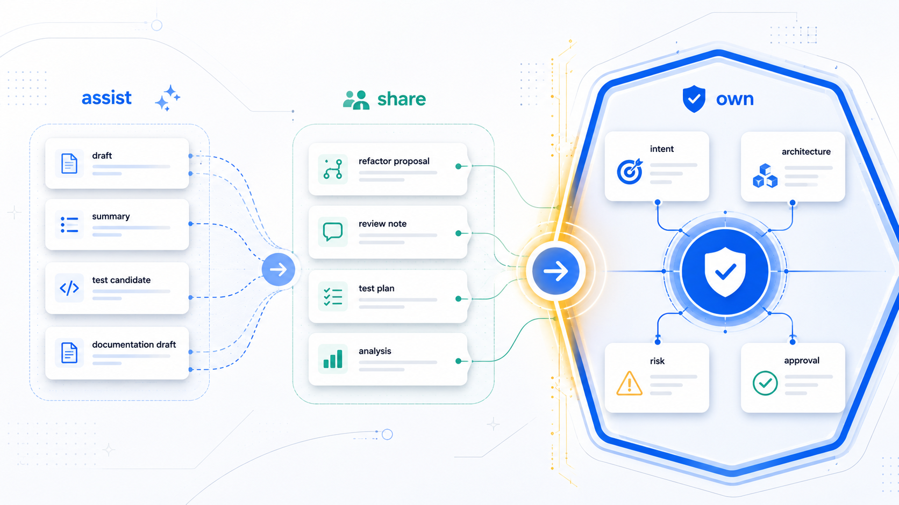
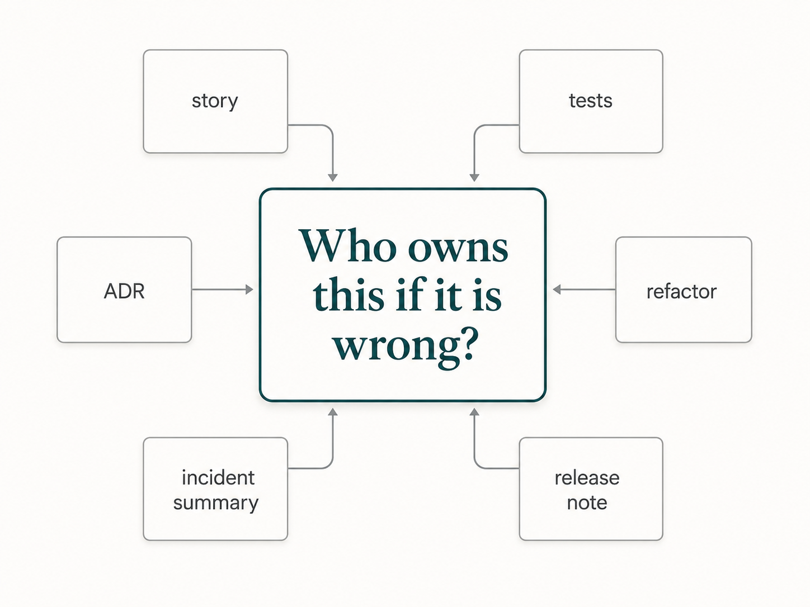

AI can help with many engineering tasks. That does not mean AI owns those tasks.
A team starts using AI across the delivery workflow.
One assistant drafts user stories from meeting notes. Another generates code from accepted tasks. A coding agent refactors a service. A test assistant creates unit tests. A documentation assistant updates release notes. A review assistant summarizes the pull request. An incident assistant summarizes logs after deployment.
The team moves faster.
Then confusion appears.
Who owns the business intent in the user story? Who decides whether the refactor is safe? Who approves the architecture trade-off? Who verifies that the generated tests prove the right behavior? Who accepts the security risk? Who decides whether the release is ready?
The answer cannot be "the AI."
The tool can participate in the work, but it cannot own the responsibility.
That is why teams need a Human + AI responsibility map.
The goal is not to keep AI away from important work. The goal is to be explicit about what AI can do, what humans must own, and where humans and AI can share the work safely.
Reliable AI-assisted engineering requires responsibility boundaries.
Two bad extremes
Teams usually fall into one of two bad mental models.
The first is treating AI like a junior employee.
This sounds reasonable at first. Junior engineers need tasks, guidance, review, and feedback. AI needs those too. But the analogy breaks at accountability.
A junior engineer is a person inside the organization. They can learn the history of a system, ask clarifying questions, understand consequences over time, and become accountable within a human team. AI can simulate some of those behaviors, but it does not own production outcomes. It does not carry responsibility during an incident. It does not explain a decision to a customer, auditor, regulator, or executive.
The second bad model is treating AI as harmless autocomplete.
That also misses reality.
Modern AI tools do more than complete a line. They can inspect repositories, edit files, run tests, generate pull requests, summarize incidents, propose architecture options, and influence decisions. Once a tool can shape work across the delivery lifecycle, it is not harmless decoration.
This is already visible in normal developer workflows. Coding agents can take an issue, inspect the repository, create a plan, change files on a branch, and prepare a pull request for review. GitHub's Copilot coding agent announcement describes pull requests created by the agent that still require human approval before CI/CD workflows are run. Review assistants can comment on pull requests. Chat assistants can explain production behavior from logs, docs, and code.
That is not just typing help.
It is participation in delivery.
The useful view sits between those extremes.
AI is a capable engineering aid that can transform information, generate artifacts, analyze inputs, and accelerate execution.
Humans remain responsible for direction, judgment, accountability, and approval.
NIST's AI Risk Management Framework is useful here because it keeps governance, risk, accountability, and context connected. Its core functions are Govern, Map, Measure, and Manage. For software teams, the practical version is simple: understand where AI is being used, measure the risk, manage the workflow, and keep human responsibility explicit.
The three responsibility zones
A practical responsibility map has three zones.
Zone 1: AI can assist.
This is work where AI drafts, summarizes, transforms, explains, or generates candidate artifacts. Humans provide context and check the result.
Zone 2: Human + AI can share.
This is work where AI can propose, analyze, or prepare options, but humans constrain the task, validate the output, and accept or reject the result.
Zone 3: Humans must own.
This is work involving intent, accountability, trade-offs, architectural judgment, business correctness, risk acceptance, and final approval.
The boundaries are not based on whether AI is technically able to produce an output. AI can produce many outputs. The better question is whether the task requires accountability, business judgment, trade-offs, or risk acceptance.
The more a task looks like transformation or execution, the more AI can help directly.
The more a task looks like judgment or accountability, the more humans must own it.
Most real engineering work sits somewhere in the middle.
Zone 1: AI can assist
AI is strongest when the task is well-bounded, pattern-based, and easy to verify.
Good examples include:
- drafting boilerplate code
- summarizing meeting notes
- generating release note drafts
- creating first-pass documentation
- converting examples into test cases
- explaining existing code
- suggesting refactor candidates
- summarizing logs or errors
- generating small helper functions
- drafting pull request summaries
DORA's guidance on AI-accessible internal data points to an important condition: AI tools are more useful when they can work with relevant internal context. Even in the assist zone, better context produces better output.
These tasks still need review, but they do not usually require AI to make final business or architecture decisions.
For example, asking AI to summarize a long incident timeline can save time. The human still validates the summary. Asking AI to draft release notes from merged pull requests can reduce writing effort. The human still checks accuracy and impact. Asking AI to generate a first pass at unit tests can be useful. The human still checks whether the tests matter.
In this zone, AI is mostly a drafting, synthesis, and execution aid.
The human responsibility is to provide context, check the output, and decide whether it is good enough to use.
Zone 2: Human + AI can share
The shared zone is where most practical AI-assisted engineering happens.
AI can contribute meaningfully, but humans must constrain and validate the work.
Examples include refactoring production code, generating tests for business behavior, analyzing a bug, proposing architecture options, drafting an ADR, reviewing a pull request, producing migration steps, creating a runbook, identifying security risks, and mapping code impact for a change.
These tasks are valuable because AI can bring speed, breadth, and pattern recognition. It can find candidates, draft options, compare alternatives, and expose issues.
But the outputs are not self-approving.
A refactor may look cleaner but change behavior. A test plan may look complete but miss the risky case. A bug analysis may sound plausible but point to the wrong cause. An ADR draft may describe trade-offs but miss organizational constraints. A security review may catch common issues but miss domain-specific risk.
In the shared zone, keep the responsibility pattern simple:
AI proposes. Humans decide.
AI drafts. Humans validate.
AI analyzes. Humans confirm.
AI accelerates the work, but humans own acceptance of the result.
This is where clear handoffs matter. If AI drafts a design option, the handoff should include assumptions, constraints, alternatives, and open questions. If AI generates tests, the handoff should explain what behavior each test proves. If AI reviews a PR, the handoff should separate blocking issues, suggestions, assumptions, and unresolved questions.
Shared work fails when teams blur contribution and approval.
This is also how AI review tools should be treated. GitHub's responsible-use guidance says Copilot code review should supplement human reviews, not replace them. Its product documentation also says Copilot reviews do not count as required approvals and do not block merges. That distinction matters. AI review can widen the review surface. It can spot common defects, summarize changes, and ask useful questions. But the human reviewer still owns whether the change is correct, maintainable, safe, and ready to merge.
Zone 3: Humans must own
Some responsibilities should remain clearly human-owned.
AI can assist with analysis, but it should not own the decision.
Humans must own:
- business intent
- final requirements approval
- architecture trade-offs
- data ownership decisions
- security risk acceptance
- compliance interpretation and accountability
- production readiness
- customer impact decisions
- prioritization
- organizational trade-offs
- incident decisions
- final merge or release approval
These responsibilities involve judgment, accountability, and real-world consequences.
AI can help prepare the decision. It can summarize evidence, list options, identify risks, draft documentation, or compare alternatives.
But a human must decide.
Architecture is a good example. AI can suggest patterns and trade-offs. It can draft a diagram and identify likely failure modes. But architecture decisions are rarely just technical. They involve team skill, operational maturity, budget, roadmap pressure, migration cost, compliance, and long-term ownership.
Business correctness is another example. AI can inspect code and tests, but it cannot decide what the business really intends when requirements conflict or when customer impact is unclear.
Security and compliance follow the same rule. AI can identify possible concerns. It cannot accept risk for the organization.
This is the line teams should not blur:
AI can inform decisions.
Humans own decisions.
Responsibility should scale with risk
The responsibility map is not static.
Risk changes the boundary.
For a small internal script, AI can do more with lighter review. For a customer-facing payment flow, the shared zone shrinks and human ownership expands. For authentication, authorization, data deletion, migrations, privacy, compliance, and production recovery, humans should own more of the decision path.
The useful question is:
What happens if this is wrong?

If the consequence is low, AI can operate with more autonomy and lighter review. If the consequence is high, humans should tighten context, scope, validation, and approval.
This is where vague phrases like "human in the loop" are not enough.
Which human?
At what point?
With what evidence?
With what authority to stop the change?
Human oversight has to be designed into the workflow. Otherwise it becomes a comforting phrase, not an operating model. The NIST AI RMF Playbook is useful here because it treats governance, measurement, and management as concrete practices, not slogans.
This avoids two extremes.
One extreme is forcing heavy human process onto every generated artifact. That wastes time and trains people to ignore the process.
The other extreme is allowing AI-generated confidence to pass as approval. That creates risk disguised as speed.
The responsibility map should help teams adjust, not freeze.
A practical responsibility map
For each AI-assisted workflow, ask four questions.
First: What can AI produce?
This might be a draft, summary, diff, test plan, documentation update, analysis, or review report.
Second: What must a human decide?
This might be intent, architecture direction, risk acceptance, business correctness, security posture, release readiness, or final approval.
Third: What evidence connects the two?
This might be acceptance criteria, tests, ADRs, logs, diagrams, domain rules, code diffs, review notes, or rollout plans.
Fourth: Who owns the outcome?
Name the human or role. Product owner. Tech lead. Architect. Security reviewer. Release owner. On-call engineer. Engineering manager. Domain expert.
This does not need to be a large process.
It can be a short section in a story, a pull request template, an agent handoff, or a team working agreement.
A simple version could look like this:
| Workflow | AI can produce | Human must decide | Evidence required |
|---|---|---|---|
| Story drafting | Draft acceptance criteria | Whether the intent is correct | Product notes, domain rules, examples |
| Refactoring | Candidate diff | Whether behavior is preserved | Tests, code review, rollout plan |
| Test generation | Test cases | Whether coverage matches risk | Acceptance criteria, edge cases, failure modes |
| Architecture option | Trade-off draft | Which trade-off the team accepts | ADR, constraints, cost, operational impact |
| Release preparation | Summary and checklist | Whether release is ready | Test results, approvals, rollback plan |
The point is to avoid vague responsibility.
If AI writes the test plan, who says the test plan is enough?
If AI refactors the service, who says behavior is preserved?
If AI summarizes an incident, who says the root cause is accepted?
If AI drafts an ADR, who says the trade-off is real?
If AI prepares the release note, who says the customer impact is accurate?
Those are responsibility questions.
They should have human answers.
What this changes in practice
The responsibility map changes how teams use AI.
Prompts become clearer because the team knows whether it is asking AI to draft, analyze, transform, or decide. In most serious engineering workflows, "decide" should not be delegated.
Reviews become sharper because reviewers know what human decision they are validating. They are not only checking the artifact. They are checking whether the right responsibility boundary was respected.
Agent workflows become safer because agents have roles. A coding agent implements. A review agent critiques. A test agent proposes cases. A documentation agent explains approved behavior. A human owner decides.
Handoffs become more useful because each AI output includes assumptions, evidence, limits, and open questions. This makes the human decision easier.
Governance becomes less abstract. Instead of saying "keep humans in the loop," the team can say exactly where humans own intent, risk, architecture, validation, and approval.
Google's public code review guidance is useful here because it treats review as more than style checking. In AI-assisted work, review also checks whether the responsibility boundary was respected: did AI assist, did humans validate, and did the right person approve?
DORA's 2025 AI-assisted software development research makes a similar practical point from another angle: AI does not improve delivery in isolation. It amplifies the system around it. If a team has clear ownership, good internal knowledge, useful tests, and healthy review practices, AI has better material to work with. If the team has unclear requirements, weak feedback loops, stale documentation, and vague approvals, AI can amplify that confusion too.
That is a better operating model.
Three practical takeaways
First, separate participation from ownership. AI can contribute to many tasks, but contribution is not accountability.
Second, use the three-zone map: AI can assist, Human + AI can share, Humans must own.
Third, adjust the boundary by risk. The higher the consequence, the more explicit human ownership, evidence, and approval should be.
The question that clarifies everything
The next time AI participates in an engineering task, ask one question:
Who owns this decision if it is wrong?
If AI drafts a user story, who owns the business intent?
If AI writes the tests, who owns confidence in the behavior?
If AI refactors the code, who owns the safety of the change?
If AI proposes an architecture, who owns the trade-off?
If AI summarizes an incident, who owns the conclusion?
If AI prepares a release note, who owns the customer impact?
AI can help with all of these.
But it cannot be accountable for them.
Reliable AI-assisted engineering is not about pretending AI is a junior employee. It is also not about dismissing it as autocomplete.
It is about designing clear responsibility boundaries so humans and AI can work together without confusing speed with ownership.